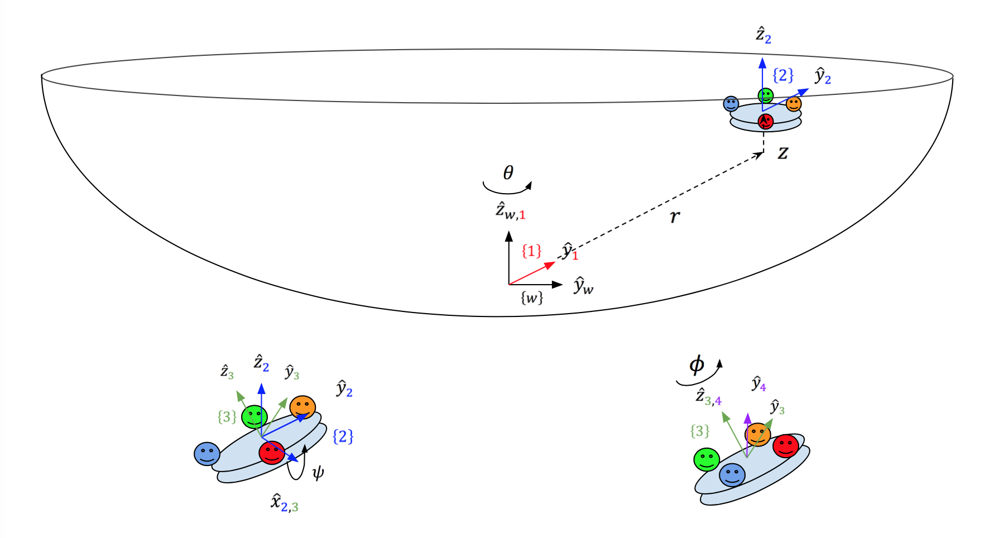

A water park is one of the places where intense and careful dynamics design are manifested. An effective design of waterslides gives heart-throbbing joy but safety-guaranteed circumstance. As a fan of waterparks, I have been interested in how joyful slides are designed. Therefore, as a final project of ME 314 : Machine Dynamics class, I chose to simulate the water bowl slide to understand how engineers designed them and made players traverse the bowl.
The simulation relies on Lagrangian Dynamics, which is simpler but more versatile than Newtonian dynamics in many aspects. Thereby, the details presented here will be specified by the Lagrangian method.
System Configurations

Constraint
External forces
Initial condition
Challenges
Let's see more
Acknowledgements